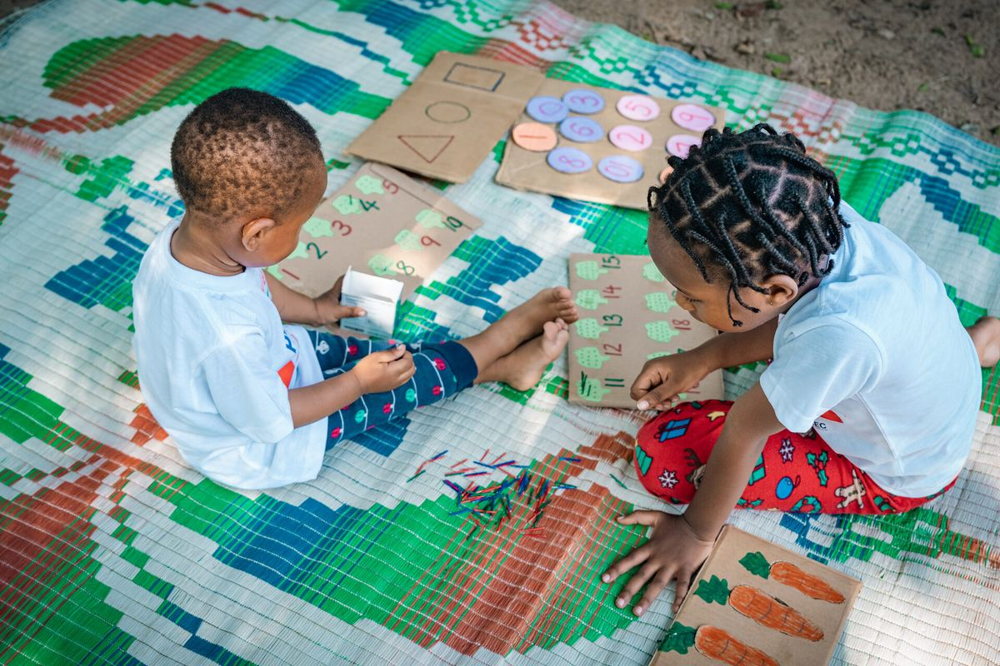
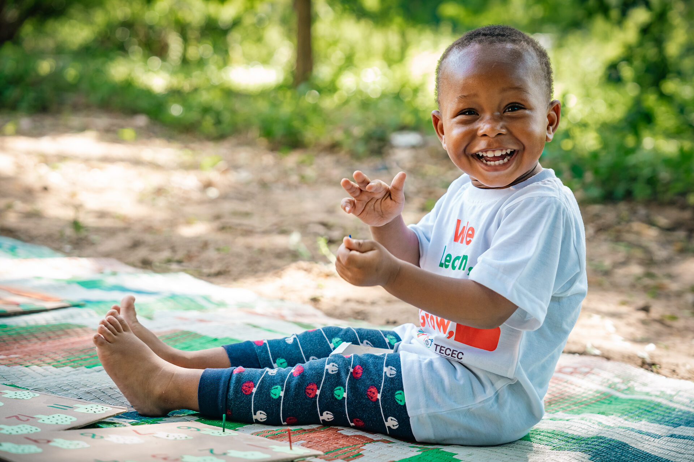
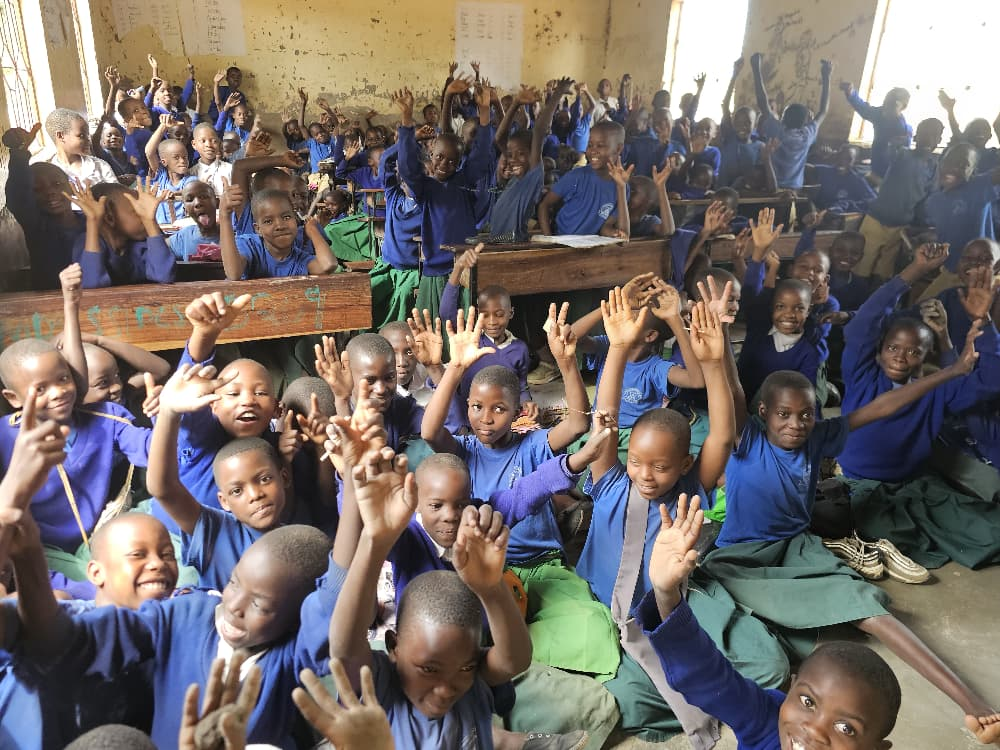

Day Care
BMCC Day Care
A newly launched center associated with the TAG-BMCC church, providing safe, nurturing care for children in the surrounding community while their parents are at work.
View this programHome → Programs → Early Childhood — TECEC
Support Shekina Primary School's TECEC programme in Nyegezi, Mwanza — less than 5 km from VOT Hostel. TECEC empowers parents, caregivers and preschool teachers with the resources to improve children's health and learning, tackling developmental delays in low-income families.




Nyegezi, Mwanza (under 5 km from VOT Hostel)
1–24 weeks, flexible
18+ (younger volunteers welcome with a guardian)
TECEC — a registered early childhood NGO
TECEC (The Early Childhood Education Centre) works directly with parents, caregivers and preschool teachers in Nyegezi to strengthen early childhood health and learning. Many of the families it supports face developmental delays linked to poverty, so volunteers help extend the reach of TECEC's staff — never replacing them, always supporting alongside them.
TECEC operates from Shekinah Pre & Primary English Medium School. At Shekinah, there is a deep commitment to pursuing excellence in wellness — encompassing not only physical health but also clarity and spiritual growth. The school's focus is on fostering a holistic approach that nurtures body, mind and spirit for a balanced and fulfilling life.
Placements
We partner with several local institutions in Mwanza, so it's easy to combine or switch placements.
A newly launched center associated with the TAG-BMCC church, providing safe, nurturing care for children in the surrounding community while their parents are at work.
View this programA dedicated institution in Mwanza committed to providing quality educational services at an affordable price, believing education should be accessible for all.
View this programGood to Know
Most volunteers welcome regardless of experience level — we match you with a placement that fits your skills. A background in education, childcare or social work is useful here but not required.
Every volunteer on this program is briefed on our child protection code of conduct before starting. This covers safe, appropriate interaction with children at all times, a strict no-photography-without-consent rule, and a direct line to our local staff to report any concern. Our permanent local team is present at the placement site throughout your stay.
We accept volunteers for as little as 1 week up to 24 weeks (about 6 months). The minimum recommended stay for meaningful impact on this program is 2–4 weeks.
In Their Words
"My three months teaching in Mwanza were the most rewarding of my life. VOT made sure I always felt supported. The local team went above and beyond to ensure I had everything I needed."
Sarah Johnson — United Kingdom, Education Program
"The children in Mwanza stole my heart! Teaching them basic English and seeing their smiles every day was the highlight of my year. Thank you VOT for this life-changing opportunity."
Aisha Patel — India, Education Program
Contact Us
Tell us your interests and availability — our team will help match you with the right placement.